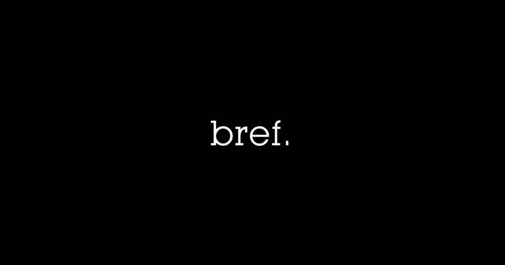

Treize ans après la fin de "bref.", la série culte créée par Kyan Khojandi et Bruno Muschio revient avec une suite très attendue : "bref.2". Disponible dès le 14 février 2025 sur Disney+, cette nouvelle saison promet une approche plus mature et introspective.
Retour sur la première saison
Diffusée en 2011 sur Canal+, "bref." racontait en épisodes ultra-courts (2 minutes) la vie d’un trentenaire parisien anonyme, interprété par Kyan Khojandi. Entre galères professionnelles, amoureuses et existentielles, la série a marqué toute une génération grâce à son montage ultra-rythmé et son humour percutant.
Le casting comprenait Mikaël Alhawi dans le rôle de Ben, le meilleur ami du héros, ainsi qu'Alice David dans le rôle de "Cette fille". De nombreuses célébrités comme Baptiste Lecaplain, Bérengère Krief et Manu Payet ont fait des apparitions mémorables.
Une suite inédite
Dans "bref.2", on retrouve le protagoniste, désormais quadragénaire, confronté à de nouvelles problématiques : le temps qui passe, la pression sociale et le besoin de se réinventer. Kyan Khojandi reprend son rôle et sera accompagné de Laura Felpin dans le rôle de Billie. Le casting original, y compris Baptiste Lecaplain, fera également son retour avec quelques surprises.

Un projet attendu depuis des années
Depuis la fin de la première saison, les fans n'ont cessé de réclamer une suite. Kyan Khojandi et Bruno Muschio avaient cependant expliqué qu'ils ne souhaitaient pas faire une suite précipitée. "On voulait attendre d'avoir quelque chose de pertinent à raconter", a confié Kyan Khojandi dans une interview récente.
C'est finalement sur Disney+ que la série a trouvé son nouveau foyer, avec un budget plus conséquent et une liberté créative totale pour les auteurs.
Format et diffusion
Contrairement à la première saison diffusée sur Canal+, "bref.2" adopte un format plus long avec des épisodes de 30 minutes. Ce choix narratif permettra d’explorer plus en profondeur la psychologie des personnages et les nouvelles thématiques abordées.
Disney+ a acquis les droits exclusifs de diffusion, offrant à la série un nouvel écrin pour toucher un public encore plus large.
Une réalisation toujours aussi soignée
Les codes visuels et narratifs qui ont fait le succès de "bref." sont de retour : narration en voix off rapide, montage ultra-dynamique, flashbacks et punchlines marquantes. Toutefois, cette nouvelle saison adopte un ton légèrement plus posé et mature, en phase avec l'évolution de son personnage principal.
Bande-annonce et premières impressions
Une première bande-annonce a été dévoilée, donnant un aperçu du ton et des thèmes abordés dans cette nouvelle saison. L’humour caractéristique de la série est toujours présent, mais avec une touche plus réfléchie et ancrée dans la réalité des quadragénaires d’aujourd’hui.
Les premières réactions sont extrêmement positives. Les fans saluent le retour du style percutant de "bref.", tout en appréciant cette nouvelle profondeur apportée aux personnages.
Où voir ou revoir "bref." ?
Pour les nostalgiques ou les nouveaux venus, la saison 1 de "bref." est disponible en intégralité sur Youtube. Une excellente occasion de se replonger dans cet univers avant la sortie de la suite.
Conclusion
"bref.2" s'annonce comme une suite fidèle à l'esprit original, tout en apportant une évolution captivante et émouvante du personnage principal. L'humour percutant est toujours au rendez-vous, mais cette nouvelle saison s'attaque également à des sujets plus profonds et matures. Le défi est de taille : réussir à capter à la fois les anciens fans tout en attirant une nouvelle génération. Mais avec un tel retour, la série pourrait bien conquérir de nouveaux spectateurs tout en restant fidèle à son essence.
Et vous, qu'attendez-vous de cette suite tant attendue ? Pensez-vous que "bref.2" saura rester fidèle à l'esprit de la première saison tout en apportant une nouvelle dimension à ses personnages ? Avez-vous hâte de découvrir ce que le futur réserve à ce quadragénaire un peu perdu dans le temps qui passe ?